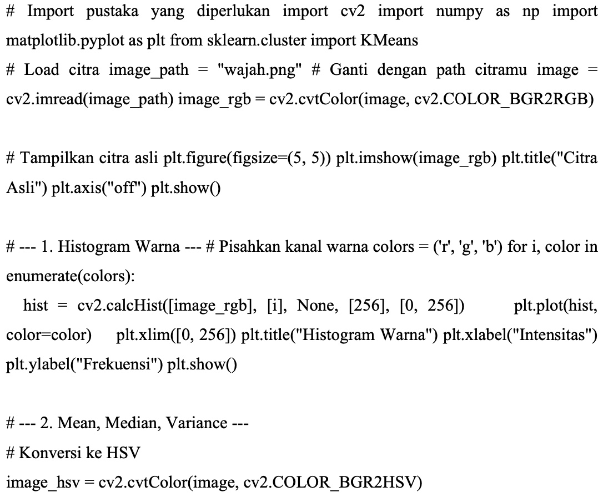
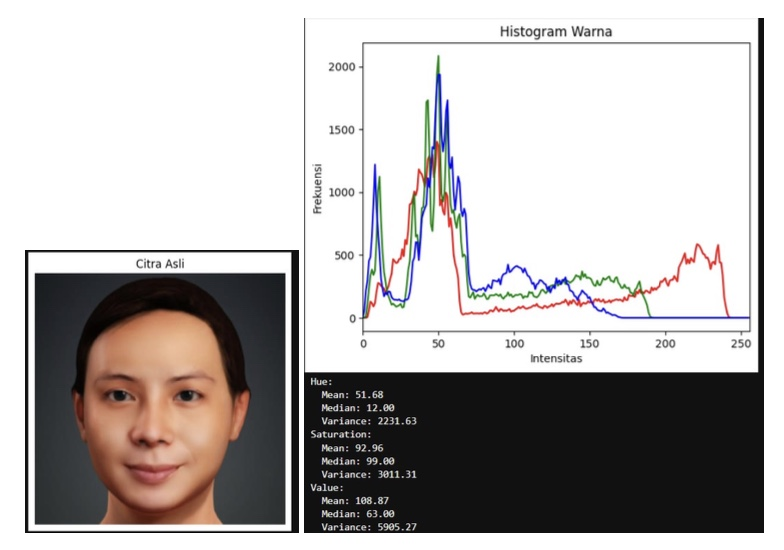

Pertemuan 10: MORFOLOGI CITRAEKSTRAKSI CIRI CITRA LANJUTAN
Materi ini membahas Morfologi Citra dalam Pengolahan Citra Digital
Sub-Topik:
- Ekstraksi Ciri Citra
- Histogram of Oriented Gradients (HOG)
- Ekstraksi Ciri Warna (Colour Features)
Ekstraksi Ciri Citra
Ekstraksi ciri citra adalah proses pengambilan informasi penting dari citra digital untuk memahami karakteristik atau pola tertentu. Dalam pengolahan citra dan visi komputer, ekstraksi ciri sangat penting untuk mereduksi data kompleks, menangkap aspek-aspek yang relevan, dan mempermudah proses analisis atau klasifikasi objek pada citra. Ekstraksi ciri berperan sebagai jembatan antara data citra mentah dan tahap selanjutnya dalam proses analisis, seperti klasifikasi, segmentasi, atau pengenalan pola. Tujuan Ekstraksi Ciri adalah untuk mereduksi data, memperjelas pola, dan memungkinkan klasifikasi atau segmentasi.
Histogram of Oriented Gradients (HOG)
Histogram of Oriented Gradients (HOG) adalah fitur deskriptif yang digunakan untuk menggambarkan distribusi gradien intensitas dalam citra. HOG menganalisis orientasi gradien intensitas citra pada setiap piksel untuk menangkap informasi yang berkaitan dengan bentuk objek, tekstur, dan fitur-fitur lokal lainnya.
Contoh Penerapannya Pada Program

Gambar 10.1: Kode Implementasi Ekstrak Ciri Tekstur

Gambar 10.2: Kode Implementasi Ekstrak Ciri Tekstur

Gambar 10.3: Output Implementasi Ekstrak Ciri Tekstur
Penjelasan kode:
Histogram LBP menunjukkan distribusi frekuensi dari pola-pola lokal yang ada dalam citra. Nilai-nilai pada histogram ini menggambarkan frekuensi kemunculan berbagai pola biner di citra. Hasil dari ekstraksi fitur HOG menunjukkan nilai-nilai gradien dalam citra. Namun, dalam output ini, sepuluh nilai pertama HOG semuanya bernilai 0. Ini bisa terjadi jika citra yang digunakan memiliki sedikit atau tidak ada gradien yang signifikan, seperti citra dengan banyak area datar atau seragam. Secara umum, fitur HOG digunakan untuk mendeteksi perubahan orientasi atau tepi dalam citra.
Ekstraksi Ciri Warna (Colour Features)
Ekstraksi ciri warna adalah proses menganalisis distribusi warna dalam sebuah citra untuk mendapatkan informasi yang relevan mengenai objek atau area tertentu. Ciri warna digunakan dalam klasifikasi citra, segmentasi, pengenalan pola, dan pengambilan informasi berbasis konten (CBIR).
Contoh Penerapannya Pada Program
Gambar 10.4: Kode Implementasi Ekstrak Ciri Warna

Gambar 10.5: Kode Implementasi Ekstrak Ciri Warna
Gambar 10.6: Output Implementasi Ekstrak Ciri Warna

Gambar 10.7: Output Implementasi Ekstrak Ciri Warna
Penjelasan kode:
Hasil analisis citra memberikan wawasan tentang distribusi warna dan tekstur yang ada. Untuk kanal warna HSV, pada Hue, nilai rata-rata (mean) sebesar 51.68 menunjukkan dominasi warna yang cenderung berada pada spektrum hijau ke kuning, meskipun sebagian besar piksel memiliki nilai hue yang lebih rendah, dengan median sebesar 12.00. Variansi pada hue cukup tinggi, yaitu 2231.63, menandakan adanya variasi warna yang luas dalam citra. Untuk Saturation, nilai rata-rata yang tinggi (92.96) menunjukkan bahwa warna dalam citra cenderung cerah dan jenuh. Nilai median 99.00 menunjukkan bahwa sebagian besar piksel memiliki saturasi yang sangat tinggi. Variansi yang juga cukup besar (3011.31) menunjukkan perbedaan tingkat kejenuhan warna di antara piksel. Sedangkan pada Value, nilai rata-rata 108.87 menunjukkan kecerahan yang relatif terang, meskipun median yang lebih rendah (63.00) menunjukkan bahwa sebagian besar piksel memiliki intensitas cahaya yang lebih rendah. Variansi yang sangat tinggi (5905.27) menunjukkan adanya perbedaan besar dalam kecerahan citra, dengan beberapa bagian citra yang sangat terang dan lainnya lebih gelap. Untuk analisis warna dominan, menggunakan metode K-means, ditemukan tiga warna utama dalam citra. Warna 1 dengan nilai RGB [42, 41, 42] menggambarkan warna gelap atau abu-abu, Warna 2 dengan RGB [217, 151, 116] lebih cerah dan mencolok, memberikan nuansa oranye atau cokelat muda, dan Warna 3 dengan RGB [155, 83, 60] menunjukkan warna merah kecoklatan yang lebih pekat. Hasil ini menunjukkan bahwa citra memiliki variasi yang cukup besar dalam hal saturasi dan kecerahan, dengan dominasi warna yang cerah dan netral.